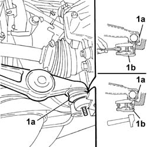
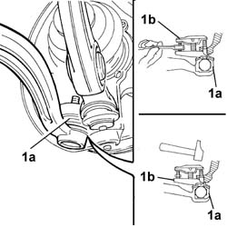
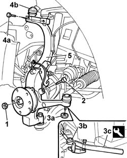

4450C10 front pillar (one), l/h or r/h complete with wheel hub - r+r with wheel removed - check wheel geometry separately
- Path
- Procedures > 44 SUSPENSION AND WHEELS > 4450 HUBS AND WHEELS > 4450C FRONT WHEEL HUBS > 4450C10 front pillar (one), l/h or r/h complete with wheel hub - r+r with wheel removed - check wheel geometry separately
- Kind
- repair procedure (removal / refitting; the operation number is the code)
- Applies to
- all engines; all production periods
- Interactive page
- https://sloeber94.github.io/elrnDB-lThss/en/#/78986
Applies to: all engines; all production periods
 Removing
Removing
 Refitting
Refitting- Position the vehicle on a lift.
See in Op. 3310A52 FRONT BRAKE DISCS - R.R. with brake calipers removed
See in Op. 3310A59 Front brake DISC GUARD (one), left or right - R.R.
1. Extract the front track control arm end (1a) using a USAG-FACOM U.16A32 type extractor (1b) or a similar tool.

Applies to: all engines; all production periods
1. Extract the rear track control arm end (1a) using a USAG-FACOM U.16A32 type extractor (1b) or a similar tool.

Applies to: all engines; all production periods
1. Remove the staking from the wheel hub nut and undo it.
2. Undo the bolt fixing the A.B.S. sensor and remove the sensor.
3. Undo the fixing nut (3a) and extract the steering track rod end (3b) using the extractor (3c).
 | Description | Code | Function |
|---|---|---|---|
3c | Head extractor | 1.847.035.000 | Extracting steering rod pin from stub axle |
4. Undo the bolt (4a) fixing the upper front track control arms (4b).
5. Remove the front steering knuckle.

Applies to: all engines; all production periods
Refitting
Removing- Fit the front steering knuckle in the special housing.
- Tighten the bolts fixing the upper front track control arms to torque.
 | Value - daNm | Fastening | Component | Ø |
|---|---|---|---|---|
. | 3.4 | Bolt | FRONT SHOCK ABSORBERS (S.M.) | M8 |
- Connect the steering track rod end and tighten the fixing nut to torque.
| Value - daNm | Fastening | Component | Ø |
|---|---|---|---|---|
. | (to the steering knuckle) 4.5 | Nut | ADJUSTABLE LINK BALL JOINTS | M10 X1.25 |
- Fit the bolt fixing the A.B.S. sensor and tighten it.
- Fit the front and rear track control arm heads on the steering knuckle and tighten the fixing nuts to the recommended torque.
| Value - daNm | Fastening | Component | Ø |
|---|---|---|---|---|
. | (to the steering knuckle) 9 | Nut | LOWER FRONT TRACK CONTROL ARMS | M14 X 1.5 |
| Value - daNm | Fastening | Component | Ø |
|---|---|---|---|---|
. | (to the steering knuckle) 8.8 | Nut | LOWER FRONT TRACK CONTROL ARMS | M14 X 1.5 |
See in Op. 3310A59 Front brake DISC GUARD (one), left or right - R.R.
See in Op. 3310A52 FRONT BRAKE DISCS - R.R. with brake calipers removed
- Remove the vehicle from the lift.
Topics linked from this page (3)
- 3310A52 FRONT BRAKE DISCS - R.R. with brake calipers removed
- 3310A59 Front brake DISC GUARD (one), left or right - R.R.
- 4450A10 FRONT WHEEL GEOMETRY - Check using optical equipment - Includes front wheel toe-in adjustment if necessary